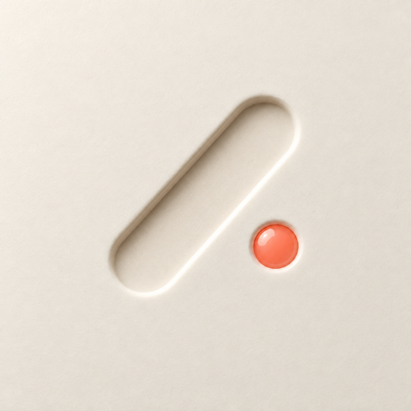

Baton
Run AI chats in parallel. Baton lives in your Mac's notch and pings you the moment one finishes or needs you.
What it does
A chat finishes or needs an answer: the notch pops open and tells you which one.
Hover the notch to see what's working, what's ready and what needs you.
⌥Tab takes you to the next ready chat. ⌥N starts a new task.
ChatGPT, Codex, Claude, Cursor and more. It reads each app's chat list on your Mac.
Install
- Download Baton.dmg, open it and drag Baton to Applications.
- Open Baton. This build isn't notarized by Apple yet, so macOS blocks the first open once: go to System Settings › Privacy & Security and click Open Anyway.
- The welcome window walks you through Accessibility and your keys. About a minute.
Stuck? See the install guide and troubleshooting.
Keys
Tells when a reply is finished or needs you. Get one at typesafe.ai. Without it Baton lists your chats but can't tell when one is done.
Writes the one-line pings and task names. Get one at Google AI Studio. Without it, Apple's on-device model writes them.
Keys stay in your Mac's Keychain. Baton reads your windows on your Mac; it only sends text to the services you set up: the keys you add, and phone pings if you turn them on.